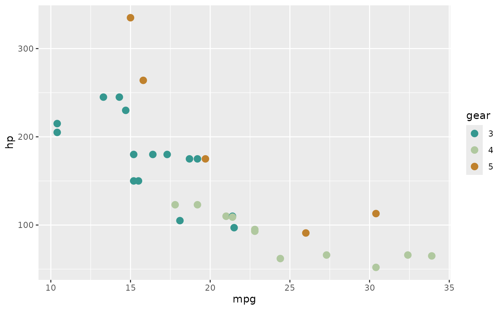

stemtool provides a set of color palettes for plotting.
There are three types of palettes:
-
Diverging - used for variables where low values are the opposite of high values. Typically likert items, where low values signify agreement and high values signify disagreement.
- Available diverging palettes:
modern,gruvbox_div.
- Available diverging palettes:
-
Nominal - used for variables where categories have no set order. Typically gender, countries of origin or occupation.
- Available nominal palettes:
gruvbox.
- Available nominal palettes:
-
Sequential - used for variables where higher values indicate higher frequency/concentration of something. Typically level of unemployment, number of people with tertiary education or socioeconomic class.
- Available sequential palettes: none (for now).
Accesing stemtool palettes
Color codes from palettes can accessed using
stem_palettes() function. The function expects palette name
(see above) and optionally the number of colors to extract. By default,
all colors are extracted. Palettes can be visually inspected with
show_col() function from scales package:
stem_palettes(palette = "modern", n = 5)
#> [1] "#35978F" "#80CDC1" "#B0C89F" "#DFC27D" "#BF812D"
show_col(stem_palettes(palette = "modern"))Using palettes in ggplot2
Palettes can be used in ggplot2 figures by using
functions scale_color_stem() and
scale_fill_stem(). Specific palette can be chosen by
palette argument, using direction = -1 can be
used to reverse the order of colors. Note that for diverging palettes,
colors are used from both ends of the palette in an alternating
pattern.
mtcars |>
within(gear <- as.factor(gear)) |>
ggplot(aes(x = mpg,
y = hp,
color = gear)) +
geom_point(size = 3) +
scale_color_stem(palette = "modern")